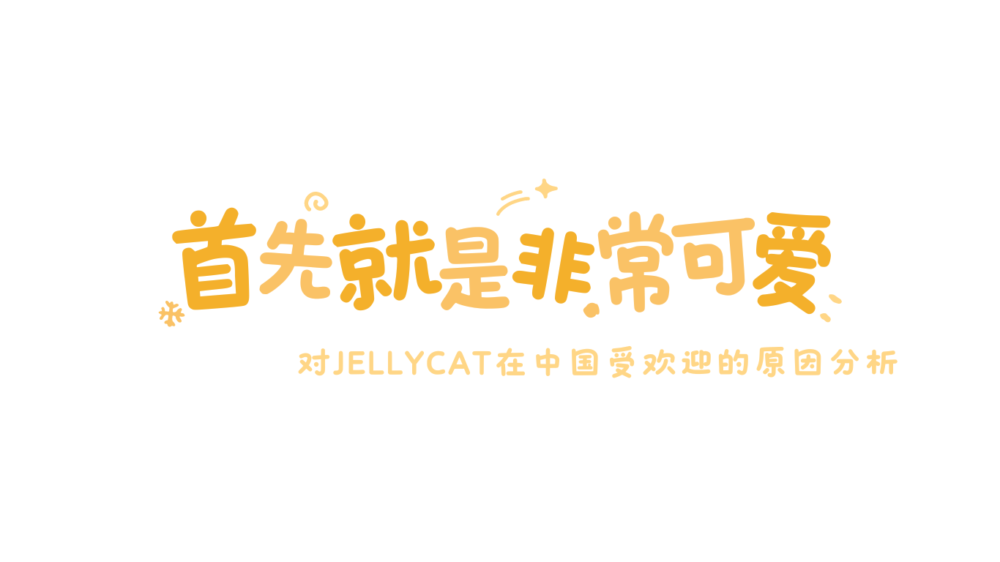
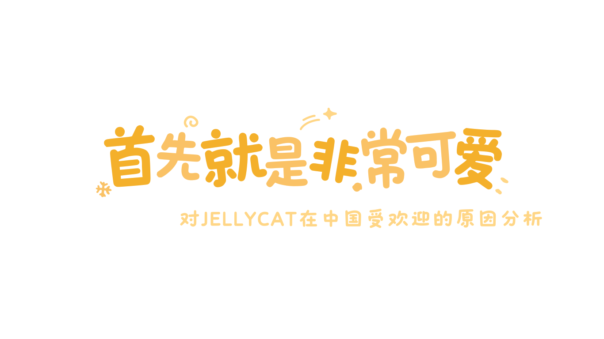

♥ 可爱的设计理念
JELLYCAT的设计理念是创造可爱、温暖又富有个性的玩具，这一理念也成为了JELLYCAT品牌的核心价值。品牌名字是“果冻”和“猫”的意思，有着奇思妙想的童趣。

像很多玩具生产商一样，JELLYCAT最早的灵感也来自动物，但真正让JELLYCAT实现破圈的或许是它突破动物系列的局限后放飞的想象力。 2018年，JELLYCAT推出趣味系列，首批产品包括水果、蔬菜等，就此打开新世界的大门。到现在，趣味系列已有超过200个产品，包含植物、食物饮料、运动、物品和圣诞系列，除了茄子、牛油果等常见食物之外，还有云朵、雪球、网球、钻石戒指、文具尺……日常生活场景中的各类物品都能被JELLYCAT设计成玩偶。
♥ 可爱的独特标志
不过，尽管JELLYCAT的产品SKU繁多、造型多样，但除动物系列之外，它们又有着颇为统一且极具辨识度的设计——豆豆眼、小小脚和微笑表情，这甚至成了JELLYCAT的独特标志。
♥ 可爱的全方位人格化设计
而且JELLYCAT的创造力不仅在于产品的外观设计，围绕着毛绒玩具的全方位人格化设计，才是赋予它真实生命的“魔法”。
JELLYCAT的许多产品名称中都有形容词，
还有许多动物玩偶有自己的名字
♥ 恰好的礼物定位
这种产品设计力让jELLYCAT突破了儿童玩具的定位，将受众群体拓展至成人。2013年，Jelly Cat进驻中国市场，2015年正式上线天猫国际旗舰店，店铺营业至今已拥有193万粉丝，热门款式巴塞罗熊月售8万+。
JELLYCAT的玩偶价格在数百元到数千元不等，在天猫 JELLYCAT旗舰店中，最便宜的玩偶是一个和iPhone 15 Pro Max差不多高度的香蕉，售价119元，最贵的则高达7999元。根据尺寸的不同，玩偶的价格有所不同，虽然给了消费者更多选择，但总体而言并不算便宜，是毛绒玩具中的轻奢品，不过却恰恰讨了年轻人的喜欢，他们更愿意选择这个价位的礼物表达他们的感情。
根据2023年11月金价为466元每克，所以每一只JELLYCAT都是一枚毛茸茸的金币，而JELLYCAT公司坐拥一座金山。
♥ 恰好的媒体运营
JELLYCAT在社交媒体上也日益活跃。2019年至2023年的四年间，JELLYCAT先后在小红书、抖音和微博上开设官方账号，目前各账号的更新频率都接近日更。JELLYCAT近两三年里开设抖音账号，可能也在一定程度上受到了小红书带来的热度的启发。
♥ 恰好的情感寄托
消费者和网友的二次创作赋予了JELLYCAT新的生命。小红书上“JELLYCAT茄子”词条至今有近6700万浏览量，网友给茄子画上大黑眼圈，并配上文字表达自己的情绪状态。 还有许多人把JELLYCAT玩偶当成自己的“搭子”，一起上课、吃饭、工作、旅行，还有人甚至专门给自己的JELLYCAT玩偶开设了账号，用第一人称的口吻记录玩偶的“日常生活”。博主@小熊不长黑眼圈的内容定位就是一只名叫李子园的巴塞罗熊的朋友圈，它把主人称作“妈妈”，其他网友则是“姨姨”，它会吃饭、睡觉、偷面包，还会听音乐、跳舞、弹钢琴。
我们统计了3000条关于JELLYCAT的小红书笔记，我们发现相关讨论普遍呈现积极情绪，“可爱”是最高频的词汇。
我们分析了小红书JELLYCAT粉丝年龄分布，发现18岁以上的用户占比约一半。
《2024年中国消费趋势报告》显示，64%的消费者更看重精神消费，尤其是年轻消费者越来越在意“精神悦己”。而JELLYCAT柔软、治愈的产品属性，先天就带有“情感浓度”。
青年一代对在JELLYCAT上寄托感情的需要，也和他们面临的现实情况有关。

♥ 遇到的独居问题
中国独居人口数正在不断增加，我们对豆瓣“独居者联盟”的帖子进行了调查统计，超过一半的发帖人认为独居时感到了消极的情绪。
♥ 遇到的经济形势
疫情之后，中国GDP增长率放缓，而公司营收增长率上升。在经济形势不好，影响人们生活状态时，更多人倾向于去寻求毛绒玩偶的陪伴，而JELLYCAT抓住了这一市场，抓住了这一时代的机遇。
没有任何事物的产生能脱离环境独立存在。对JELLYCAT的迷恋与追捧正应合着我们的社会现实。所有的经历改变都在无时无刻发散影响。新冠肺炎已经离开，但是留下的不止躯体上的长新冠，经济上的长新冠，还有精神上的长新冠。也许一切都会最终消散离开，时间会留下最后的答案。

It was the best of times,
it was the worst of times,
it was the age of wisdom,
it was the age of foolishness,
it was the epoch of belief,
it was the epoch of incredulity,
it was the season of Light,
it was the season of darkness.
it was the spring of hope,
it was the winter of despair,
we had everything before us,
we had nothing before us,
we were all going direct to Heaven,
we were all going direct the other way，
in short,
the period was so.
制 作
赵欣然 占雨晴